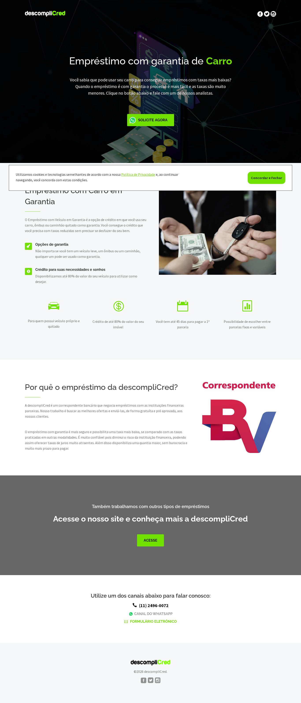

Sistema de Investigação de Marca e Identidade Online
https://emprestimos.descomplicred.com.br/
Prioridade: MEDIUM · Cenário: B_AMBIGUOUS_COMMUNICATION · Revisão humana: PENDING
A página é operada pela promotora descompliCred para captação de crédito auto equity. A empresa possui marca própria dominante e afirma atuar como correspondente bancário. Contudo, insere o logotipo antigo/legado da BV (B vermelho e V azul) acompanhado do termo 'Correspondente' sem apresentar a razão social, CNPJ ou os contatos de ouvidoria da instituição contratante (exigências da Res. CMN nº 4.935/2021). Trata-se de relação de parceria com comunicação ambígua e desatualizada, justificando classificação REVIEW_REQUIRED com prioridade MEDIUM. [Revisor: CONFIRM] A página pertence a uma promotora/correspondente de crédito (descompliCred) ofertando empréstimo com garantia de veículo. Há exibição do logotipo legado da marca Banco BV acompanhado do descritor 'Correspondente' (E-IMG-3 e E-SHOT-FULL), sem a inclusão de dados cadastrais obrigatórios (CNPJ e razão social) e sem menção aos canais oficiais de ouvidoria do banco parceiro (Resolução CMN nº 4.935/2021). Como a marca própria da promotora permanece predominante mas a comunicação da parceria é desatualizada e ambígua quanto aos deveres regulatórios, confirma-se a hipótese de REVIEW_REQUIRED com prioridade MEDIUM.

| Ref | Tipo | Local | Conteúdo |
|---|---|---|---|
| E-URL | domain | url | URL final: https://emprestimos.descomplicred.com.br/ (domínio: emprestimos.descomplicred.com.br) |
| E-DISC-001 | text | search_index | Índice de busca (grounding): descomplicred.com.br — **URL:** `https://descomplicred.com.br` | **Como a marca é utilizada:** Landing page de captação de clientes para empréstimo com garantia de veículo (auto equity), prometendo liberação de até 80% do valor do bem com taxas reduzidas e formulário eletrônico | Utiliza destaque visual/textual com o rótulo *“Correspondente BV”* | Declara atuar como correspondente que negocia com parceiros, porém não exibe no corpo da página ou rodapé a razão social do operador, seu CNPJ próprio ou os telefones das ouvidorias e canais oficiais do Banco BV |
| E-SHOT-VIEWPORT | screenshot | viewport | evidence/C65c64c07ee/attempt-1/viewport.png (sha256 f60f3d1adde28a76…) |
| E-SHOT-FULL | screenshot | page | evidence/C65c64c07ee/attempt-1/fullpage.png (sha256 2de951d5953d1c03…) |
| E-TITLE | title | head | Empréstimo com Garantia de Carro - descompliCred |
| E-META-1 | meta | head | description: Você sabia que pode usar os seus bens para conseguir empréstimos com taxas mais baixas? Quando o empréstimo é com garantia o processo é mais fácil e as taxas são muito menores. |
| E-META-2 | meta | head | og:site_name: Empréstimos descompliCred |
| E-META-3 | meta | head | og:title: Empréstimo com Garantia de Carro - descompliCred |
| E-META-4 | meta | head | og:description: Você sabia que pode usar seu carro para conseguir empréstimos com taxas mais baixas? Quando o empréstimo é com garantia o processo é mais fácil e as taxas são muito menores. |
| E-META-5 | meta | head | author: descompliCred |
| E-HEAD-1 | heading | page | Empréstimo com garantia de Carro |
| E-HEAD-2 | heading | page | Empréstimo com Carro em Garantia |
| E-HEAD-3 | heading | page | Por quê o empréstimo da descompliCred? |
| E-HEAD-4 | heading | page | Acesse o nosso site e conheça mais a descompliCred |
| E-HEAD-5 | heading | page | Utilize um dos canais abaixo para falar conosco: |
| E-HDR | text | header | EMPRÉSTIMOS COM CARRO EM GARANTIA SOBRE NÓS CONTATO Empréstimo com garantia de Carro Você sabia que pode usar seu carro para conseguir empréstimos com taxas mais baixas? Quando o empréstimo é com garantia o processo é mais fácil e as taxas são muito menores. Clique no botão abaixo e fale com um de nossos analistas. SOLICITE AGORA |
| E-FOLD | text | viewport (acima da dobra) | Empréstimo com garantia de Carro Você sabia que pode usar seu carro para conseguir empréstimos com taxas mais baixas? Quando o empréstimo é com garantia o processo é mais fácil e as taxas são muito menores. Clique no botão abaixo e fale com um de nossos analistas. Solicite agora Empréstimo com Carro em Garantia Utilizamos cookies e tecnologias semelhantes de acordo com a nossa Política de Privacidade e, ao continuar navegando, você concorda com estas condições. Concordar e Fechar |
| E-FTR | text | footer | ©2026 descompliCred. |
| E-NAV | nav | header | <https://emprestimos.descomplicred.com.br/#> | EMPRÉSTIMOS <https://emprestimos.descomplicred.com.br/#home> | COM CARRO EM GARANTIA <https://emprestimos.descomplicred.com.br/#section2> | SOBRE NÓS <https://emprestimos.descomplicred.com.br/#section6> | CONTATO <https://emprestimos.descomplicred.com.br/#section8> | <https://www.facebook.com/descomplicredoficial/> | <https://twitter.com/descompliCred> | <https://www.instagram.com/descomplicredoficial/> | SOLICITE AGORA <https://api.whatsapp.com/send?phone=551124960072> |
| E-CTA-1 | cta | header | SOLICITE AGORA <https://api.whatsapp.com/send?phone=551124960072> |
| E-CTA-2 | cta | page | ACESSE <https://descomplicred.com.br/> |
| E-CTA-3 | cta | page | Concordar e Fechar |
| E-CONTACT-1 | contact | header | <https://www.facebook.com/descomplicredoficial/> |
| E-CONTACT-2 | contact | header | <https://www.instagram.com/descomplicredoficial/> |
| E-CONTACT-3 | contact | header | SOLICITE AGORA <https://api.whatsapp.com/send?phone=551124960072> |
| E-CONTACT-4 | contact | page | (11) 2496-0072 <tel:1124960072> |
| E-CONTACT-5 | contact | page | CANAL DO WHATSAPP <https://api.whatsapp.com/send?phone=551124960072> |
| E-CONTACT-6 | contact | footer | <https://www.facebook.com/descomplicredoficial/> |
| E-CONTACT-7 | contact | footer | <https://www.instagram.com/descomplicredoficial/> |
| E-CONTACT-8 | contact | page | Fale pelo WhatsApp <https://api.whatsapp.com/send?phone=551124960072> |
| E-IMG-1 | image | header | imagem alt='Empréstimos descompliCred' src=https://emprestimos.descomplicred.com.br/images/logo-dark.png (183x26, abaixo da dobra) |
| E-IMG-2 | image | header (acima da dobra) | imagem alt='Empréstimos descompliCred' src=https://emprestimos.descomplicred.com.br/images/logo.png (183x26, acima da dobra) |
| E-IMG-3 | image | page | imagem alt='Correspondente BV' src=https://emprestimos.descomplicred.com.br/images/bv_correspondente.png (335x323, abaixo da dobra) |
| E-IMG-4 | image | footer | imagem alt='Empréstimos descompliCred' src=https://emprestimos.descomplicred.com.br/images/logo-dark.png (180x26, abaixo da dobra) |
| E-TXT-001 | text | page | A descompliCred é um correspondente bancário que negocia empréstimos com as instituições financeiras parceiras. Nosso trabalho é buscar as melhores ofertas e enviá-las, de forma gratuíta e pré aprovada, aos nossos clientes. |
| E-TXT-002 | text | page | O empréstimo com garantia é mais seguro e possibilita uma taxa mais baixa, se comparado com as taxas praticadas em outras modalidades. É muito confiável pois diminui o risco da instituição financeira, podendo assim oferecer taxas de juros muito atraentes. Além disso disponibiliza uma quantia maior, sem burocracia e muito mais prazo para pagar. |
| E-TXT-003 | text | page | CANAL DO WHATSAPP |
| Dimensão | Sinal | Achado | Refs |
|---|---|---|---|
| VISUAL_IDENTITY | NEUTRAL | A identidade visual dominante da página pertence à própria descompliCred (paleta verde e preta), embora haja inserção pontual da logo BV. | E-SHOT-VIEWPORT E-SHOT-FULL E-IMG-2 |
| DECLARED_COMMERCIAL_IDENTITY | NEUTRAL | O estabelecimento comercial se identifica sob a marca de fantasia 'descompliCred', mas não informa sua razão social nem CNPJ em nenhum local visível da página. | E-TITLE E-FTR E-SHOT-FULL |
| CORRESPONDENT_TRANSPARENCY | CONFUSION | Embora declare explicitamente ser correspondente bancário, não cumpre os requisitos de transparência cadastral (CNPJ do correspondente e canais da ouvidoria do Banco BV). | E-TXT-001 E-FTR E-DISC-001 |
| INSTITUTIONAL_LANGUAGE | LEGITIMATE | O texto explicita que a descompliCred atua como intermediária que negocia empréstimos com instituições financeiras parceiras, sem se passar pelo próprio banco. | E-TXT-001 |
| LOGO_USAGE | CONFUSION | Exibição do logotipo histórico/legado da BV (B vermelho e V azul) sob a legenda 'Correspondente', denotando falta de conformidade com a identidade visual atual do banco. | E-IMG-3 E-SHOT-FULL |
| SERVICE_JOURNEY | NEUTRAL | Jornada de captação de potenciais clientes para empréstimo com garantia de veículo com redirecionamento para canal de atendimento próprio via WhatsApp. | E-CTA-1 E-CONTACT-3 E-CONTACT-8 |
| CONTACT_CHANNELS | NEUTRAL | Canais de contato apresentados pertencem exclusivamente à descompliCred (telefone e WhatsApp com DDD 11 e redes sociais próprias). | E-CONTACT-4 E-CONTACT-5 E-NAV |
| CONSUMER_CONFUSION | CONFUSION | O uso de logotipo legado do banco acoplado ao termo 'Correspondente' sem a identificação do CNPJ da contratada nem das regras de ouvidoria pode gerar dúvida sobre a formalidade e regularidade do credenciamento perante o Banco BV. | E-IMG-3 E-TXT-001 E-DISC-001 |
A página é operada pela promotora descompliCred para captação de crédito auto equity. A empresa possui marca própria dominante e afirma atuar como correspondente bancário. Contudo, insere o logotipo antigo/legado da BV (B vermelho e V azul) acompanhado do termo 'Correspondente' sem apresentar a razão social, CNPJ ou os contatos de ouvidoria da instituição contratante (exigências da Res. CMN nº 4.935/2021). Trata-se de relação de parceria com comunicação ambígua e desatualizada, justificando classificação REVIEW_REQUIRED com prioridade MEDIUM.
Há declaração de correspondente ou de parceria, sem identificação suficiente ou sem confirmação cadastral.
| Tipo | Valor | Ref | Contexto |
|---|---|---|---|
| domain | descomplicred.com.br | E-URL | |
| social_profile | https://www.facebook.com/descomplicredoficial/ | E-NAV | |
| social_profile | https://www.instagram.com/descomplicredoficial/ | E-NAV | |
| trade_name | Empréstimos descompliCred | E-META-2 | |
| phone | (11) 2496-0072 | E-CONTACT-4 | |
| phone | 1124960072 | E-CONTACT-4 | |
| SOLICITE AGORA <https://api.whatsapp.com/send?phone=551124960072> | E-CONTACT-3 | ||
| CANAL DO WHATSAPP <https://api.whatsapp.com/send?phone=551124960072> | E-CONTACT-5 | ||
| Fale pelo WhatsApp <https://api.whatsapp.com/send?phone=551124960072> | E-CONTACT-8 | ||
| correspondent_declaration | correspondente bancário | E-TXT-001 | A descompliCred é um correspondente bancário que negocia empréstimos com as instituições financeiras parceiras. Nosso trabalho é buscar as melhores ofertas e enviá-las, de forma gratuíta e pré aprovad |
| partnership_declaration | parceiros | E-DISC-001 | Declara atuar como correspondente que negocia com parceiros, porém não exibe no corpo da página ou rodapé a razão social do operador, seu CNPJ próprio ou os telefones das ouvidorias e canais oficiais |
Mapeamento indicativo para apoio à auditoria. Não constitui conclusão regulatória; a decisão definitiva pertence à auditoria.
Fonte: NORMATIVE
Art. 14. O contrato de correspondente deve estabelecer: [...] II - vedação à utilização, pelo contratado, de logomarca ou de outros atributos que sejam similares aos adotados pela instituição contratante em suas agências, postos de atendimento, sítio eletrônico na internet, aplicativo ou outras plataformas de comunicação em rede;
Hipótese: Uso de logomarca, uso excessivo/desproporcional ou de atributos similares aos adotados pela contratante em seus canais. Aplicável somente se confirmado o vínculo de correspondente.
Evidência observada: E-DISC-001 E-IMG-3 E-SHOT-FULL
Informação faltante:
Fonte: NORMATIVE
Art. 14. O contrato de correspondente deve estabelecer: [...] III - divulgação ao público, pelo contratado, de sua condição de prestador de serviços à instituição contratante, identificada pelo nome com que é conhecida no mercado, com descrição dos produtos e serviços oferecidos e canais de contato da instituição contratante, inclusive de sua ouvidoria, em local visível, em destaque e em formato legível, por meio de: a) sítio eletrônico do correspondente na internet, acessível na página inicial; b) aplicativo e outras plataformas de comunicação em rede do correspondente; [...]
Hipótese: Divulgação ao público da condição de prestador de serviços/parceria ausente, insuficiente, ambígua ou sem destaque. Aplicável somente se confirmado o vínculo de correspondente.
Evidência observada: E-DISC-001 E-FTR E-IMG-3 E-SHOT-FULL E-TXT-001
Informação faltante:
Fonte: NORMATIVE
Art. 3º O correspondente atua por conta e sob as diretrizes da instituição contratante, que assume inteira responsabilidade pelo atendimento prestado aos clientes e usuários por meio do contratado.
Evidência observada: —
Limitações: requisitos contratuais/internos não fornecidos: mapeamento limitado ao texto normativo
Decisão: CONFIRM → REVIEW_REQUIRED / MEDIUM
A página pertence a uma promotora/correspondente de crédito (descompliCred) ofertando empréstimo com garantia de veículo. Há exibição do logotipo legado da marca Banco BV acompanhado do descritor 'Correspondente' (E-IMG-3 e E-SHOT-FULL), sem a inclusão de dados cadastrais obrigatórios (CNPJ e razão social) e sem menção aos canais oficiais de ouvidoria do banco parceiro (Resolução CMN nº 4.935/2021). Como a marca própria da promotora permanece predominante mas a comunicação da parceria é desatualizada e ambígua quanto aos deveres regulatórios, confirma-se a hipótese de REVIEW_REQUIRED com prioridade MEDIUM.
| Tema | Severidade | Questionamento | Refs |
|---|---|---|---|
| contradictory_evidence | LOW | Coexistem declaração de correspondente e indícios de confusão. | E-TXT-001 |
| Fonte | Consulta / hipótese | URL original | Título / trecho |
|---|---|---|---|
| grounding | Objetivo: Correspondentes bancários e promotoras que declaram vínculo com a marca.
Execute no Google Search as seguintes consultas (dorks):
- ("correspondente bancário" OR "Correspondente no País" OR "correspondente do Banco BV") "Banco BV" -site:bv.com.br -site:bancobv.com.br -site:bvfinanceira.com.br -site:bvinvestimentos.com.br -site:napista.com.br -site:bvopen.com.br -site:meufinanciamentosolar.com.br -site:votorantim.com.br -site:vam.com.br -site:reclameaqui.com.br -site:jusbrasil.com.br -site:jus.br
- ("correspondente BV" OR "Somos correspondente" "Banco BV" OR "correspondente" "bv financeira") financiamento -site:bv.com.br -site:bancobv.com.br -site:bvfinanceira.com.br -site:bvinvestimentos.com.br -site:napista.com.br -site:bvopen.com.br -site:meufinanciamentosolar.com.br -site:votorantim.com.br -site:vam.com.br -site:reclameaqui.com.br -site:jusbrasil.com.br -site:jus.br
- "correspondente" "Banco Votorantim" financiamento -site:bv.com.br -site:bancobv.com.br -site:bvfinanceira.com.br -site:bvinvestimentos.com.br -site:napista.com.br -site:bvopen.com.br -site:meufinanciamentosolar.com.br -site:votorantim.com.br -site:vam.com.br -site:reclameaqui.com.br -site:jusbrasil.com.br -site:jus.br
Liste de forma abrangente as páginas públicas encontradas (até 12 resultados distintos), informando para cada uma o nome do estabelecimento/perfil, a URL e como a marca é utilizada (destaque visual, título, feirão, simulador, redes sociais e se há ou não identificação clara de CNPJ e condição de correspondente bancário). H3-service:correspondente-vinculo | https://emprestimos.descomplicred.com.br/ | descomplicred.com.br **URL:** `https://descomplicred.com.br` | **Como a marca é utilizada:** Landing page de captação de clientes para empréstimo com garantia de veículo (auto equity), prometendo liberação de até 80% do valor do bem com taxas reduzidas e formulário eletrônico | Utiliza destaque visual/textual com o rótulo *“Correspondente BV”* | Declara atuar como correspondente que negocia com parceiros, porém não exibe no corpo da página ou rodapé a razão social do operador, seu CNPJ próprio ou os telefones das ouvidorias e canais oficiais do Banco BV |
Original: https://emprestimos.descomplicred.com.br/
Final: https://emprestimos.descomplicred.com.br/
| Artefato | Caminho | SHA-256 | Bytes |
|---|---|---|---|
| screenshot_viewport | evidence/C65c64c07ee/attempt-1/viewport.png | f60f3d1adde28a764f054c2e393be93275fc84d30085668815f006d28824e3df | 365143 |
| screenshot_full | evidence/C65c64c07ee/attempt-1/fullpage.png | 2de951d5953d1c0300b9e4d1a1c798cda0699c7e5b29f85d9219ae535a090625 | 656899 |
| html | evidence/C65c64c07ee/attempt-1/page.html.txt | 3d6850df2a3c0e79e25b19ebe79040e670166baf7c5ce8d2e8d0217518356535 | 19043 |
| text | evidence/C65c64c07ee/attempt-1/text.txt | 6b42f9df61d36a692a61e30ada90ac2db362743036a371aea733fbdedb14c0db | 2131 |
| page_data | evidence/C65c64c07ee/attempt-1/page.json | eb65de8b204ef3117d0043f002c34bc5c9e146b842cd249faf9edcf17afcb553 | 10527 |
| Quando | De | Para | Nota |
|---|---|---|---|
| 2026-11-25T18:12:09+00:00 | DISCOVERED | QUEUED | prioritised (score 1.5) |
| 2026-11-25T19:17:40+00:00 | QUEUED | COLLECTING | |
| 2026-11-25T19:17:46+00:00 | COLLECTING | COLLECTED | |
| 2026-11-25T19:17:46+00:00 | COLLECTED | ANALYZING | |
| 2026-11-25T19:18:17+00:00 | ANALYZING | REVIEWING | |
| 2026-11-25T19:18:26+00:00 | REVIEWING | COMPLETED |